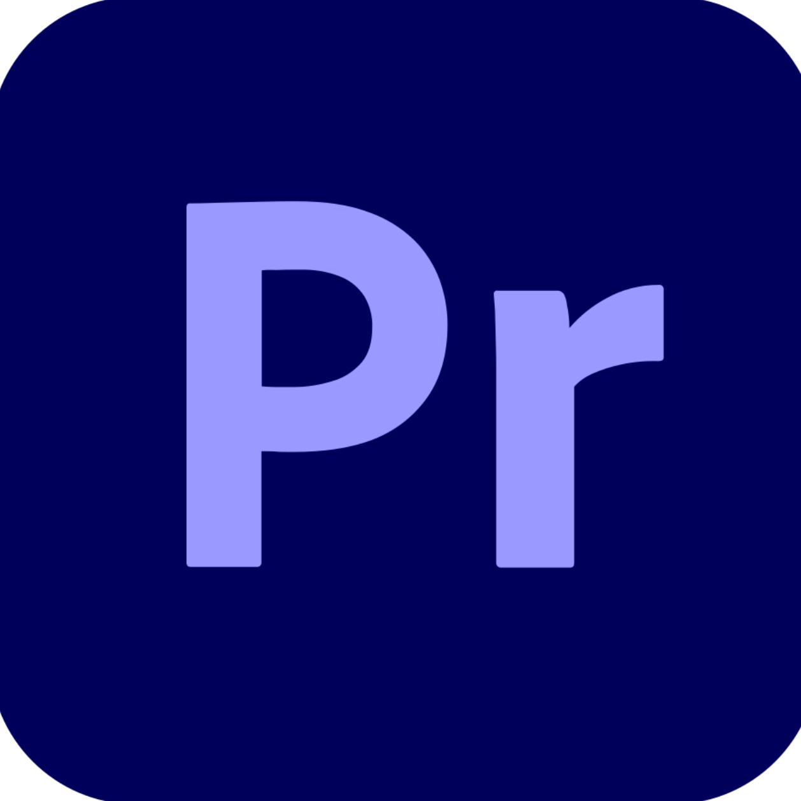
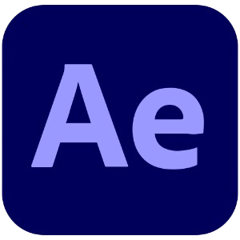

Chi sono
Sono Federica Tromba, matricola 0512122056, frequento il secondo anno di Informatica presso l'
Università degli Studi di Salerno.
Ho frequentato il liceo scientifico opzione scienze applicate presso il
Liceo Scientifico Statale "Francesco Severi"
di Salerno, diplomandomi nel 2024.
Interessi / Hobby / Talenti
Ho diversi interessi, tra i quali la programmazione, motivo principale per il cui mi sono iscritta a questo corso di laurea.
Musica
Sono appassionata di musica, infatti sono al mio quarto anno di studio di canto moderno.
Ho partecipato ad alcuni concorsi e show canori locali, nonostante la mia forte timidezza sul palco.
Ho anche studiato pianoforte per ben 6 anni quando ero piccina!
Sono una grandissima fan dei musical e uno dei miei sogni è quello di riuscire a vedere un musical a Broadway.

Ho partecipato ad alcuni concorsi e show canori locali, nonostante la mia forte timidezza sul palco.
Ho anche studiato pianoforte per ben 6 anni quando ero piccina!
Sono una grandissima fan dei musical e uno dei miei sogni è quello di riuscire a vedere un musical a Broadway.
Video Editing
Una mia grandissima passione è il video editing, sono completamente autodidatta, ho imparato ad usare software come:
Adobe Premiere Pro
Adobe After Effects- Adobe Audition
- Cap Cut
Ecco qualche esempio dei miei edit:
(edit del 9 settembre 2021 su Tony Stark dal franchise Marvel)
(edit del 15 agosto 2025 sul film Hunger Games: The Songbird and the Snake)
(edit del 7 agosto 2023 sulla complicata relazione tra Bellamy e Octavia dalla serie The 100)
(ps: ecco il link al drive completo con tutti i miei edit)
(click here)
Videogiochi
Mi piace molto giocare ai videogiochi, soprattutto a League of Legends, uno dei miei giochi preferiti in assoluto.
Non mi limito a giocare solo sul pc, difatti questa passione è partita quando mi regalarono per la prima volta una nintendo ds all'età di 5 anni.
Tra i miei giochi preferiti in assoluto ci sono: Stardew Valley, Animal Crossing, Mario Odyssey, Mario Galaxy & Genshin Impact.
Non mi limito a giocare solo sul pc, difatti questa passione è partita quando mi regalarono per la prima volta una nintendo ds all'età di 5 anni.
Tra i miei giochi preferiti in assoluto ci sono: Stardew Valley, Animal Crossing, Mario Odyssey, Mario Galaxy & Genshin Impact.